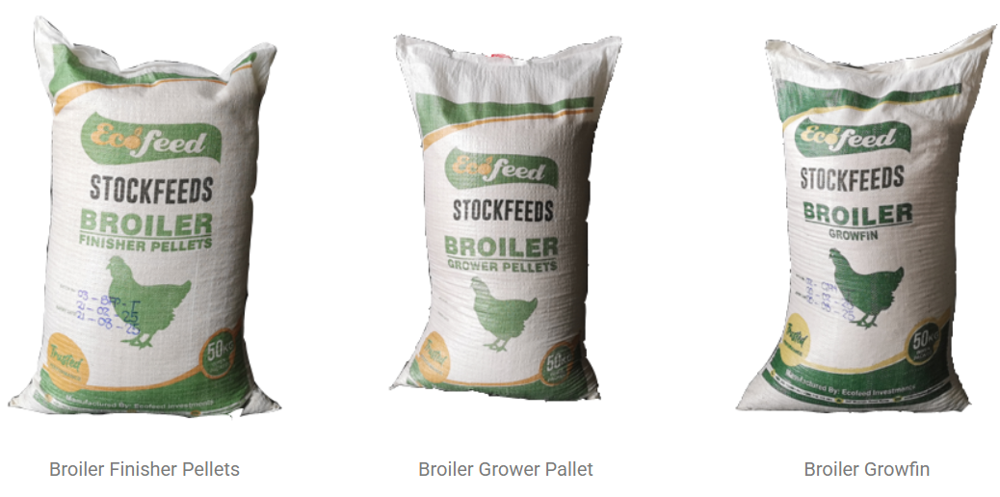

Broiler Feed Program (0-42 Days)
Broilers require a three-phase feeding program for optimal growth and feed conversion ratio (FCR target: 1.55-1.70 by day 42).
Phase 1: Starter (Days 0-10)
- Broiler Starter Crumbs – 22-24% protein, high energy (2,950-3,150 kcal/kg ME)
- Feed per bird: ~450g total over 10 days
- Key nutrients: Lysine, methionine for early muscle development
- Management: Ensure all chicks have feed in crops within 24 hours of placement
Phase 2: Grower (Days 11-24)
- Broiler Grower Crumbs/Pellets – 18-21% protein, sustained energy
- Feed per bird: ~1.2kg total over grower phase
- Purpose: Continued muscle growth and skeletal development
- Options: Grower Concentrate (mix with maize for cost savings)
Phase 3: Finisher (Days 25-42)
- Broiler Finisher Pellets – 16-18% protein, balanced for fat deposition
- Feed per bird: ~2.5kg total to market weight
- Value options: Broiler Value StarGrow & Grow-Fin for cost-effective finishing
- Total feed to market: Approximately 4kg per bird
💡 Tip: Provide clean, fresh water at all times. Water intake is 1.5-2x feed intake by weight.
